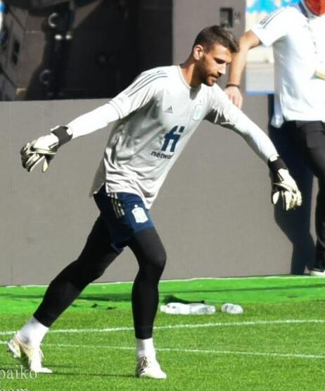
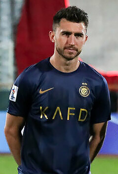
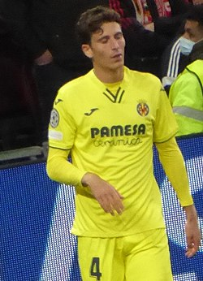
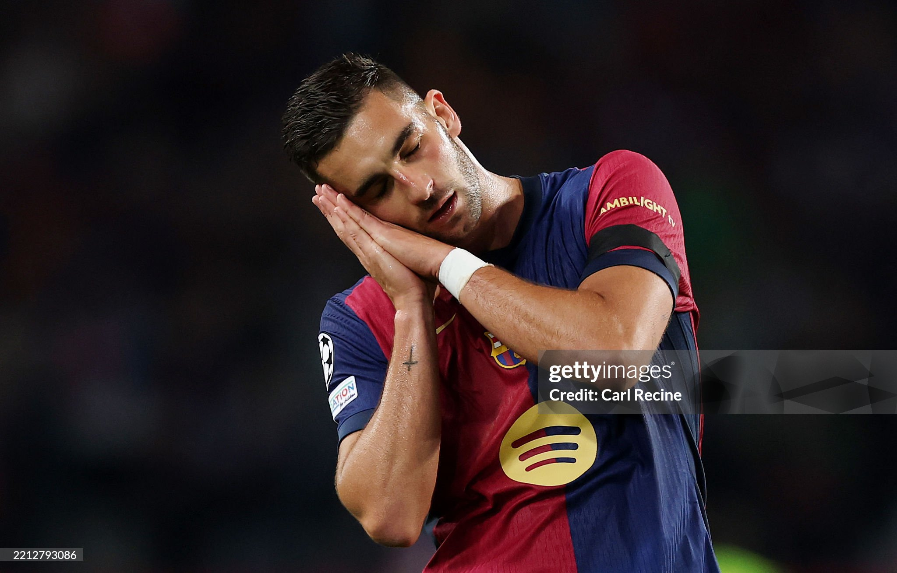
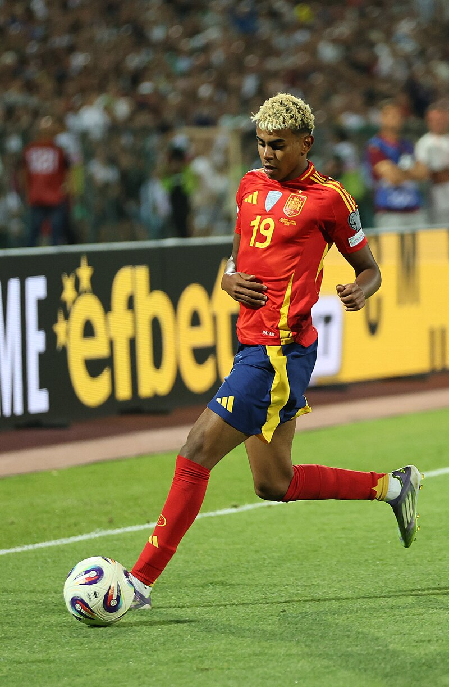
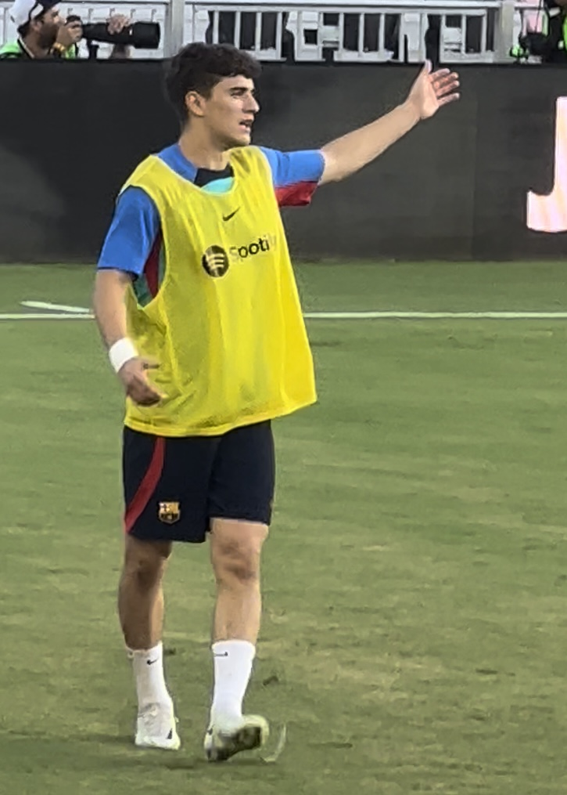
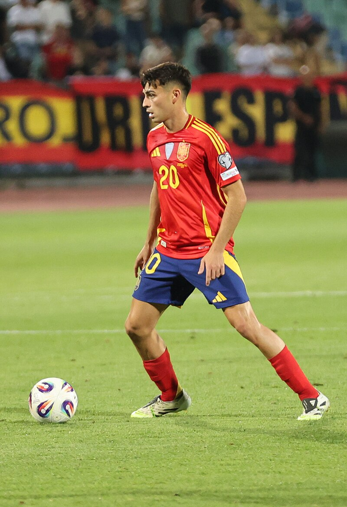
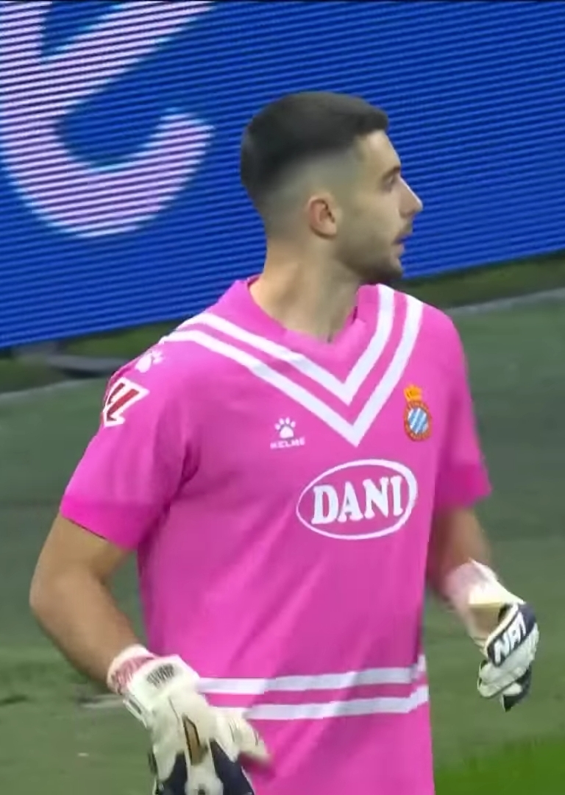
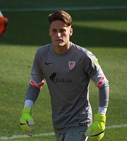

| Nombre | Posición | Edad | Bibliografía | Portada |
|---|---|---|---|---|
| Unai Simón | Portero | 27 |
Portero titular de España, conocido por su seguridad bajo los tres palos y liderazgo en defensa. |
 |
| David Raya | Portero | 27 |
Portero con experiencia en Premier League, destaca por su capacidad de anticipación y reflejos. |
 |
| Mikel Merino | Centrocampista | 29 |
Centrocampista del Newcastle, destaca por su capacidad de recuperación, distribución y llegada al área rival. |
|
| José Gayà | Lateral izquierdo | 30 |
Lateral izquierdo sólido y ofensivo, con experiencia en la selección y en el Valencia CF. |
|
| Aymeric Laporte | Defensa central | 31 |
Defensa central experimentado, combina solidez defensiva con capacidad para jugar desde atrás. |
 |
| Pau Torres | Defensa central | 28 |
Defensa del Villarreal, fuerte en marca y juego aéreo. Es pieza clave en la zaga española. |
 |
| Ferran Torres | Delantero | 25 |
Delantero rápido y versátil, actualmente en la Premier League, aporta goles y asistencia al equipo nacional. |
 |
| Lamine Yamal | Extremo | 17 |
Joven talento español, extremo prometedor del Barcelona, con velocidad y gran habilidad para el regate. |
 |
| Gavi | Centrocampista | 20 |
Joven promesa del FC Barcelona, destaca por su visión de juego, técnica y agresividad en el mediocampo. |
 |
| Pedri | Centrocampista | 22 |
Centrocampista del FC Barcelona, reconocido por su inteligencia táctica, visión y precisión en los pases. |
 |
| Joan García | Portero | 24 |
Portero joven y prometedor, destaca por su agilidad y reflejos en la portería. |
 |
| Yeray Merino | Defensa | 26 |
Defensa con buena capacidad de anticipación y solidez en la zaga, aporta equilibrio al equipo. |
 |